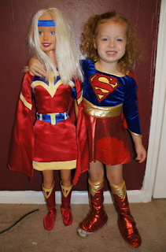

Figure Specialty Costumes
9/28/2012
{kind=link}

Comment: Here is a picture that I thought you might get a kick out of. I created a Superhero named Trojul. This is the costume that I designed and had made (left in photo) by a lady that makes doll clothes. Rebekah is posed with the mannequin displaying Moe's new garb. Rebekah is trying to learn ventriloquism, as well. Next time I see them I will have to take Joe and we will see what she has learned so far. Rebekah is 3 years old now. Hugh Troyer
* * * * *
From Mr. D: First of all, I wish you the best of success with encouraging Rebekah to pursue her ventriloquist interest. The best vents start young!
And as for the costumes, very nice, the both of them. Your photo is a good reminder of the two most popular ways to custom outfit a ventriloquist figure. 1) Obtain the services of a seamstress, especially one experienced in creating clothes for dolsl. 2) Purchase a ready-made young child's costume - and now is the perfect season to do it, with the store racks well stocked with trick or treating costumes. Don't forget to check the racks at thrift stores. You can find some surprisingly appropriate seasonal clothing bargains.
Generally speaking, look for these sizes:
32" figure: 2T. 36" figure: 3T. 38-40" figure: 4T.
From Mr. D: First of all, I wish you the best of success with encouraging Rebekah to pursue her ventriloquist interest. The best vents start young!
And as for the costumes, very nice, the both of them. Your photo is a good reminder of the two most popular ways to custom outfit a ventriloquist figure. 1) Obtain the services of a seamstress, especially one experienced in creating clothes for dolsl. 2) Purchase a ready-made young child's costume - and now is the perfect season to do it, with the store racks well stocked with trick or treating costumes. Don't forget to check the racks at thrift stores. You can find some surprisingly appropriate seasonal clothing bargains.
Generally speaking, look for these sizes:
32" figure: 2T. 36" figure: 3T. 38-40" figure: 4T.